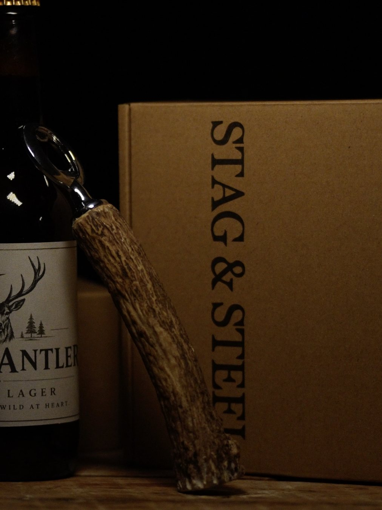
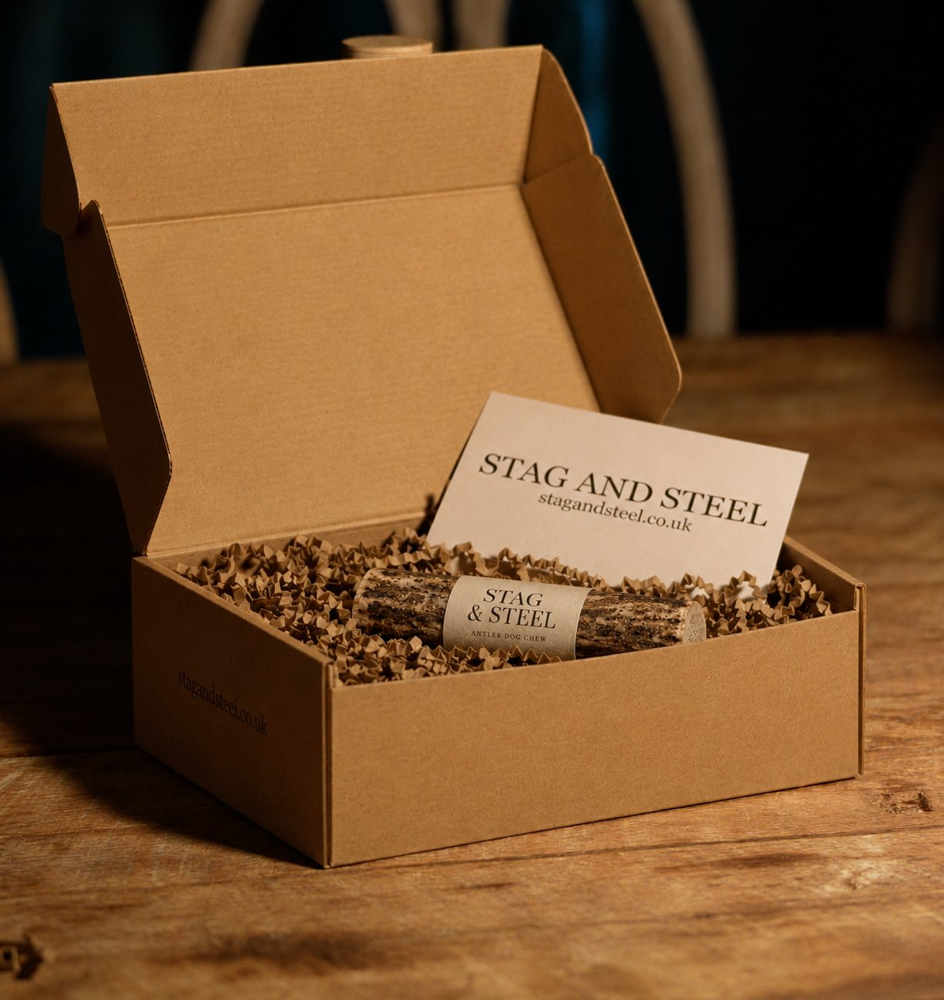

A real place.
A real pair of hands.
Stag & Steel is a small Scottish brand run by Harry and Zach. We make a short range of things from red deer antler, and we make them properly.

Mauldslie Farm,
Midlothian.
Our antler comes from one family farm in the Moorfoot Hills above Temple, looking out over Gladhouse Reservoir, a short drive south of Edinburgh.
Antler is grown by the animal over a season, so every length has its own colour, weight and grain. We work with that rather than against it.
Four steps, by hand.
Sorted
Antler is gathered on the farm and sorted by size, shape and condition.
Cut and cleaned
Each piece is chosen for the job, then cut to length and cleaned.
Fitted and finished
Openers are set onto polished steel. Every piece is sanded and checked by hand.
Boxed
Packed in our kraft box with tissue and a card, then sent to your door.
One antler. One maker. One piece at a time.The Stag & Steel way
Questions
before you buy?
Email hello@stagandsteel.co.uk and you will reach one of us directly.
